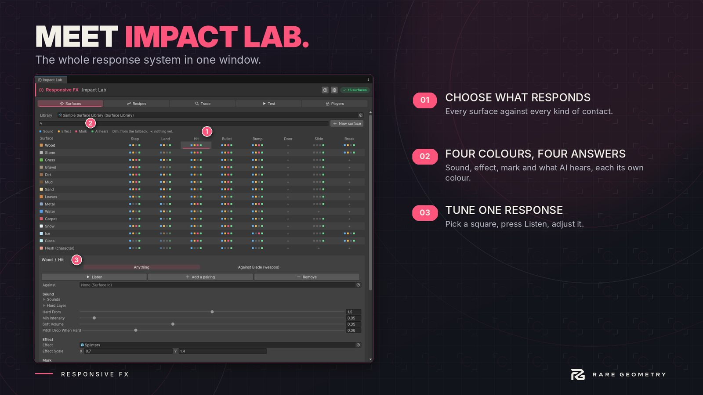

Impact Lab
Tools > Responsive FX > Impact Lab is the main window. It has five tabs and a gear for the project settings. It works docked at any width: rows that do not fit scroll with an arrow at each end.


Surfaces #
The Surface Response Matrix. Surfaces run down the side, kinds of contact across the top: Step, Land, Hit, Bullet, Bump, Door, Slide, Break and more when the window is wide.
- Each cell shows four small squares, in this order: sound, effect, mark, AI noise. Lit means this surface has it. Dim means it comes from the surface's fallback or its footstep settings. A plus means nothing answers yet.
- Click a cell to edit that answer under the grid. Listen plays one of its sounds.
- Add a pairing makes a second answer used only when the other thing is a surface you pick: a blade on wood, a metal boot on stone. The row of buttons above the fields switches between "Anything" and each pairing.
- New surface makes a surface asset in your data folder and adds it to the library.
See Surfaces for what each field does.
Recipes #
Every Hit Feedback profile in the project, with when the parts of a normal, critical and killing hit start. Edit opens the profile in Hit Recipe Studio, where you drag each part along a timeline and preview it.
Trace #
While the game plays, every contact is listed: what it was, the surface, the result, the rule that decided the surface, who caused it and how long ago.
- Click a row for the full story: each part (sound, effect, mark, noise) with played or the reason it was held back, in plain words: a limit, a cooldown, a player option, the feedback switch.
- Pause stops the list so you can read it. Only skipped hides everything that played in full.
- Show in Scene view draws each contact where it landed, how far its noise carried and which listeners heard it.
- The line under the switches shows how much of each limit the last burst used.
The trace is on in the Editor and development builds, and off in release builds unless your code turns it on
(ContactTrace.Enabled).
Test #
Select an object in the scene and press a button to send that contact to it, on the side facing the Scene view. Intensity and Made by change which row answers and how strongly. The hit buttons preview a hit on the object's Hit Feedback; they never change health. In Edit Mode the buttons play a preview of the sound, effect, mark, flash and number without entering Play Mode.
All feedback (or F9 while playing) switches every response off and on, to compare the game with and without. Damage still lands and AI still hears while it is off.
Players #
What players may change. Pick a policy to start from (Arcade freedom, Competitive clarity, Cinematic, Stealth readability), then set each option to Editable, Locked or Hidden, with its start value and its limits. See Player options and screens.
Settings (the gear) #
The project-wide rules for contacts, saved in an asset in your data folder:
| Group | What it sets |
|---|---|
| General | Contact responses on or off, the Surface Library that answers, the Response Graphs that run. |
| Sound | Volume, how 3D the sounds are, distance, mixer group, how many voices play at once. |
| Limits | The most sounds and effects in one burst, the burst window, the window in which near-identical contacts are combined. Kills, parries, criticals and breaks are never held back. |
| Marks | The most marks, how they fade, whether they follow moving things, the mark material. |
| Noise for AI | The base noise radius, and whether hits, bullets and bumps make noise (steps always can). |
| Bridges | Turns the Feel bridge on when Feel is in the project. |
The page also opens Diagnostics and Help and Support.